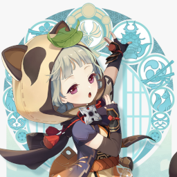

Sayu Mains
The tanuki ninja? She is neither a tanuki nor a ninja. Haha. Next time you see her, give her this candy.
— Kamisato Ayaka
A Discord server for the upcoming Genshin Impact character from Inazuma, Sayu! She will likely be released once the story in Inazuma begins, and she will be the very first Claymore, Anemo character.
Here at Sayu Mains we have helpful mods and admins if you need to get a hold of them then please do it by sending a DM to the ModMail bot and we will get back to you as soon as we can.